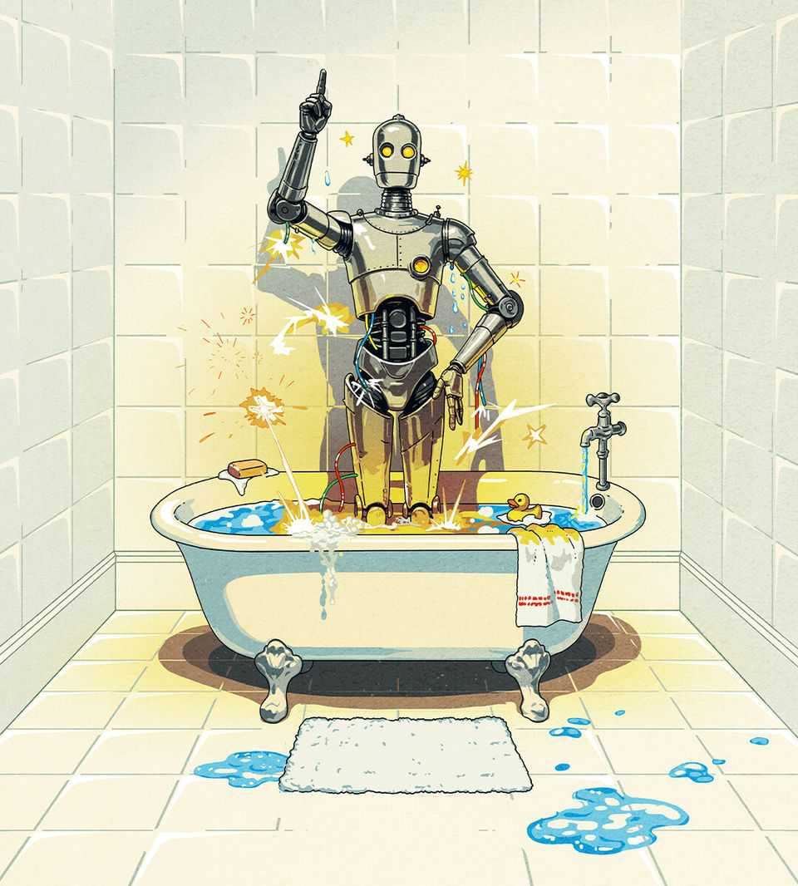

What if the machines take over science?
Artificial intelligence will require scholars to reinvent their disciplines

Oct 15th 2026
OCTOBER 6TH 2026 may be remembered as the biggest day in the history of mathematics. OpenAI, an American frontier lab, released more than 700 academic papers claiming progress or solutions for 372 problems that had baffled scholars for decades. Mathematicians are still struggling to digest what it means for their discipline.
The implications promise to go far beyond maths. It is time to grapple with how artificial intelligence (AI) will affect science as a whole. The maths results are, simultaneously, a leap forward for humanity; a marvel that underscores the breakneck progress of AI; and a warning of a future in which understanding of the universe could belong to machines that are impenetrable to human minds. The question is how to achieve progress without sacrificing understanding.
AIs have so vividly shown their scientific potential in maths because its proofs are derived from axioms, not evidence, and are therefore, in principle, verifiable mechanically. But as we report in our special Science & technology section this week, AI has also accelerated progress in the empirical sciences, partly because other fields use maths as a tool. AI has made weather forecasts better. It has proposed millions of possible useful new materials and helped control experiments with nuclear fusion. And it can predict the shapes of almost every known protein from its constituent amino acids, an advance that won a Nobel prize.
More remarkable AI-fuelled scientific advances are almost certain. The most exciting possibilities are in biology. Researchers are using AI to design drought-resistant crops, to search for new drugs and to create (we must hope) friendly viruses that attack harmful bacteria. There is an effort to use AI to build computer models of how cells work. Armed with life in silico, scientists may go on to achieve mastery of biology, gaining the ability to create entirely new organisms from scratch. If so, DNA would become just another form of computer code to be manipulated like a string of tokens in an AI model.
Like much that is related to AI, that prospect is giddying and terrifying in equal measure. The first reaction of many mathematicians is to be terrified. Since OpenAI’s breakthroughs, they have been up in arms at the lab’s encroachment into their discipline. The Association for Human Mathematics, a group of over 900 scholars, warns that “mathematicians did not ask for this work to be done.” They say that the pay-off in doing mathematics comes not from the proof, but from the toil, because that is what advances human understanding. Having AIs churn out incomprehensible but correct solutions is like giving students the answers to their homework: without effort, there is no learning.
These complaints contain an element of special pleading. Academics have no more right to dictate the production of knowledge than any other profession. Truth-seeking benefits everyone and cannot be reserved for a guild of scholars. The hierarchies of academics, climbed by proving things, are not sacred. If needs be, they must be remade for a world in which AI produces proofs and humans digest them. In science, understanding should not be fetishised over results. Every time you swallow a paracetamol pill to see off a headache, you rely on a mechanism that works but is not fully understood.
Yet the fear of handing over science to the machines is not an idle one. AI companies are ploughing resources into science not out of altruism but because, as with humans, solving problems can help make models more intelligent. Many researchers think that a model that gets better at solving scientific problems will get better at doing everything else, too. If so, then nobody will be able to compete with big AI labs, which will eventually control models that work on improving themselves and become, by some definitions, incomprehensibly intelligent. These genius AI scientists will connect to the physical world either through humanoid robots or by hooking up models to lab equipment, as Anthropic has already done.
The problem this future poses for science is much the same as the one it poses for society. People will have to provide resources to machines for them to continue to make progress. If no one understands what they are doing, simply writing the cheques would be reckless. Nobody could be sure that the models were operating in humanity’s best interests. Even if AI labs manage to “align” machines with the interests of humanity, so that they can be fully trusted, a society where people simply ask AIs what to do—in science, or more broadly—is one in which humans will become the machines’ pets.
Some people may be willing to accept that if it means, say, curing all diseases. But at least until there is unshakeable alignment between AIs and humans, science will always need a human in the loop. Labs should be able to use AIs to solve problems, but resources such as laboratories and computing power should be directed and monitored by people who can reach an informed judgment about what AIs are doing. This will, inevitably, slow progress. But it is necessary if AIs are to remain under human control.
In the meantime, human-guided machine-science will require scholars to reinvent their disciplines. Scientists will have to learn to love—and credit with status and career advancement—guiding models and studying, verifying and teaching their results. Governments will need to allocate research grants on the same basis. For their part, AI labs should seek to be good scientific citizens, submitting their work for peer review and publishing their methods and code.
Checking and digesting a computer’s results may seem like unglamorous work. Much human-produced science is error-strewn because scholars are not rewarded for policing the work of others. But a renewed emphasis on verification and scepticism would improve science. It is worth remembering the Royal Society’s motto, adopted in the 17th century: Nullius in verba, or “Take nobody’s word for it”. That same spirit now needs to apply to science made by the machines. ■